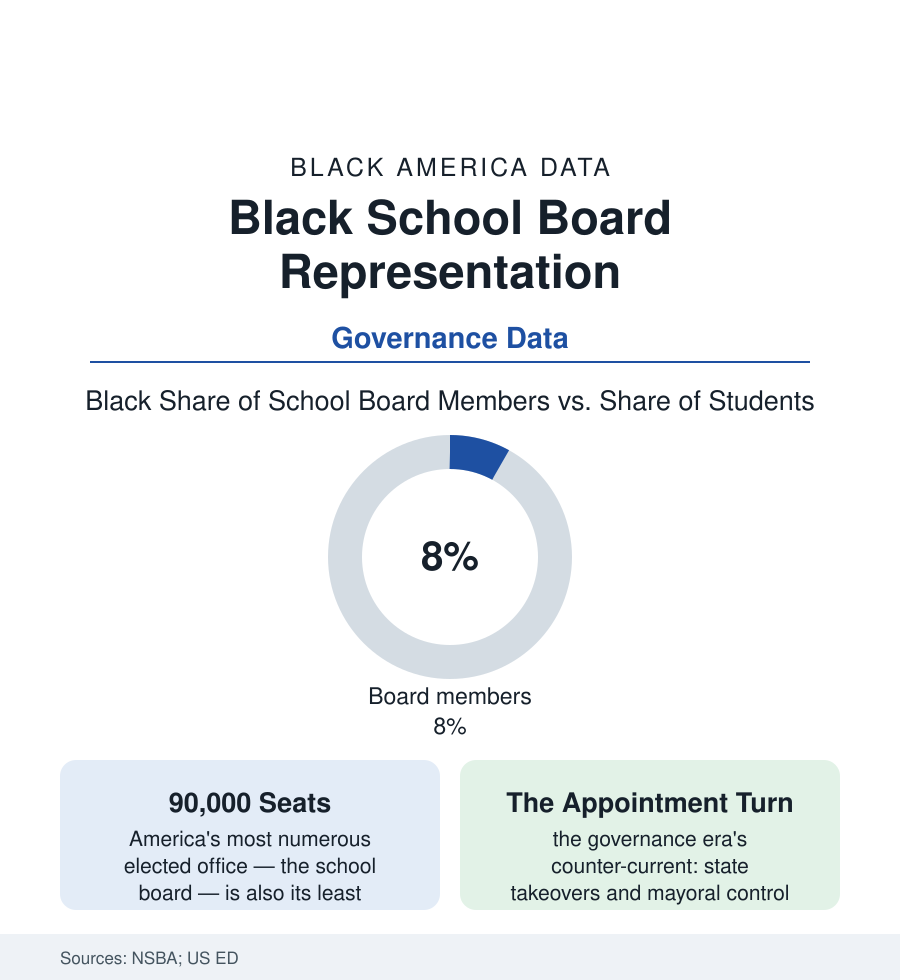

Black Education
Who Governs the Schools: Black Voices on America's School Boards
Black students are a sixth of enrollment; Black school board members are a much thinner share of the 90,000 seats that hire superintendents and set policy. The governance file.

The most numerous elected officials in America are school board members — some ninety thousand of them — and they hold the powers this section's other articles orbit: they hire the superintendents of the leadership article, sign the budgets of the funding file, and approve the policies whose effects fill the discipline and achievement data. Black students are about a sixth of public enrollment. Black members, in the national association's surveys, hold well under a tenth of the seats. This article reads the governance file.
The Representation Ledger
The NSBA's periodic censuses of board members draw the bench: predominantly white, predominantly older, drawn heavily from the districts' professional classes — against a student body that is majority children of color in the national enrollment data. The Black member's geography follows the atlas's own: concentrated where Black voters are (the South's county districts, the majority-Black urban systems — boards there Black-led for a generation, governing the hardest fiscal files in American education with the state's overseers at the door) and thinnest in the suburban districts whose Black enrollment has grown fastest (the suburbanization file's children arriving in systems whose boards still look like the towns of 1990 — the representation lag measured in voting cycles, the at-large district structures diluting the newcomers' precincts in the voting-rights literature's standard finding, the ward-based conversions that followed in district after district as the remedy). The pipeline into the seats is its own data: the education and civic biographies of the members in the surveys (teachers and PTA officers heavily represented — the parent file's most organized graduates), the uncontested-seat rates (a large share of board races drawing a single candidate in the local studies — the seat as an appointment the community makes by acclamation or by default), and the cost-of-entry rows (the campaign trivial by congressional standards, the time cost enormous — the evening-meeting years that screen for the salaried and the retired, the governance bench's class tilt written in its calendar).
What Boards Decide, and Who Decides Instead
The stakes are the section's previous files itemized: the board adopts the discipline code whose data open this tab, approves the funding formula's local share, sets the calendar and the closures list (the school-closures file's votes — cast, in the hardest-hit cities, by boards answering to the neighborhoods in the hearing rooms), hires and fires the superintendent (the leadership article's thin Black bench answering to an even thinner set of Black boards in the big districts), and negotiates the teachers' contract (the collective-bargaining table where the workforce file's terms are set). Against this stands the era's counter-current, and its geography is not random in the record: the state takeovers and emergency managers and mayoral-control conversions of the past four decades have fallen overwhelmingly on majority-Black districts (the research counts are stark — the districts stripped of elected governance read like this atlas's city list), their results debated in the outcomes literature and their democratic cost entered in the civic one: the population with the least board representation nationally also holds the distinction of having its elected boards most often dissolved by higher authority. The reform current runs the other way in a handful of the same cities (takeovers ended, elected boards restored — the governance restored to electorates that promptly re-elected the representation the state had suspended), and the newest variable is the student member (the board seats with student representatives, voting or advisory, multiplying in the state law data — the governed acquiring a formal voice in the room, a pipeline whose first graduates are only now reaching the adult seats).
Reading the Governance Data
Every number in this section passed through a room where a board voted. The representation ledger asks the prior question — who was in the room, and who put them there — and its answer is the education file's foundation fact: the schools are governed, in the main, by people who do not share the governed children's lives, except where Black communities built the bench themselves, seat by unglamorous seat. The association publishes its census every few years. It is the section's first table, hiding at the back of the book.
More in Black Education
Black Educational Attainment: High School Parity, the College Gap
About 89 percent of Black adults hold a high school diploma and one in four holds a bachelor's degree or higher — the attainment ladder, the college completion gap, and the generational trend.
Historically Black Colleges and Universities: Enrollment and Degrees
More than 100 HBCUs enroll roughly 290,000 students and award about one in six Black bachelor's degrees — an outsized share from a small sector. The federal education data.
Black College Enrollment: 2.4 Million Students
About 2.4 million Black students are enrolled in American colleges — nearly two-thirds of them women. The NCES enrollment data by sector, level, and trend.
Source: National School Boards Association surveys; U.S. Department of Education schools data; National Conference of State Legislatures education governance research; Education Week governance reporting.